官方地址为：https://git-scm.com/download/win
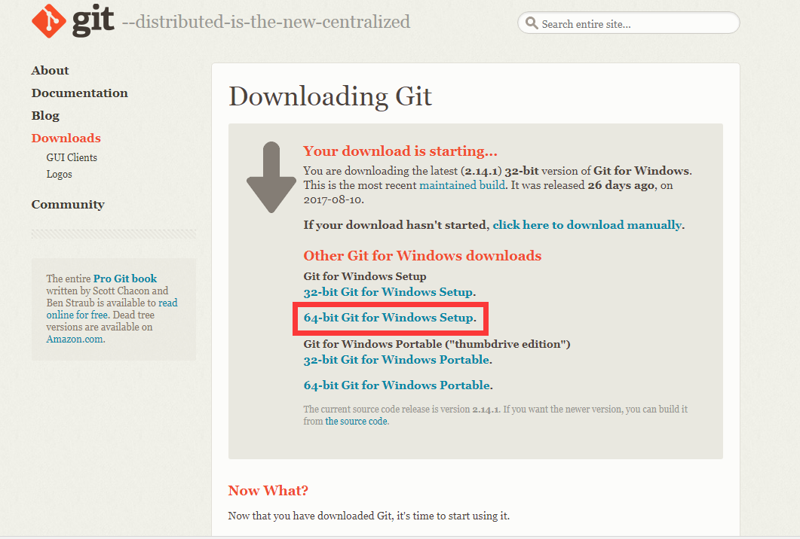
2、下载完之后，双击安装,全部选择默认.
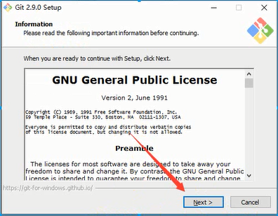
3、选择安装目录
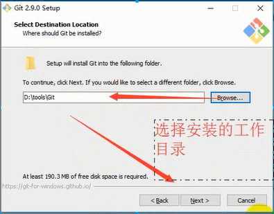
4、选择组件
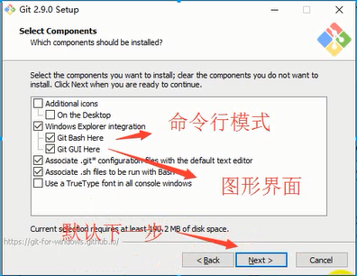
5、开始菜单目录名设置
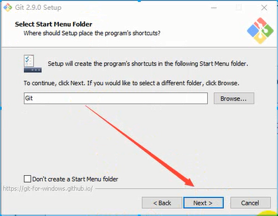
6、选择使用命令行环境
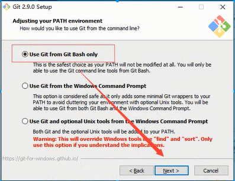
7、以下三步默认，直接点击下一步
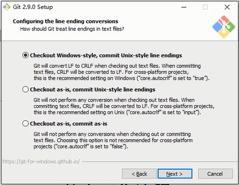
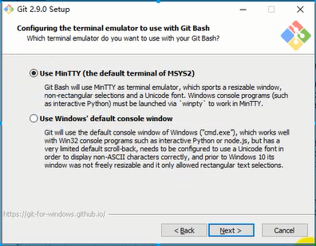
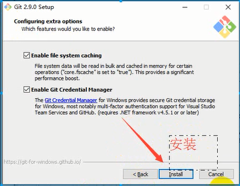
8、安装完成
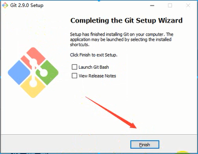
二.Git初始化及仓库创建和操作
1、Git安装之后需要进行一些基本信息设置(需要先注册Github)
a、设置用户名：git config -- global user.name '你再github上注册的用户名';
b、设置用户邮箱：git config -- global user.email 'github注册时候的邮箱';
注意：该配置会在github主页上显示谁提交了该文件
c、配置ok之后，我们用如下命令来看看是否配置成功:git config --list
注意：git config --global 参数，有了这个参数表示你这台机器上所有的git仓库都会使用这个配置，当然你也可以对某个仓库指定不同的用户名和邮箱
2、初始化一个新的git仓库
a、创建文件夹
方法一：可以鼠标右击-》点击新建文件夹test1
方法二：使用git新建：$ mkdir test1
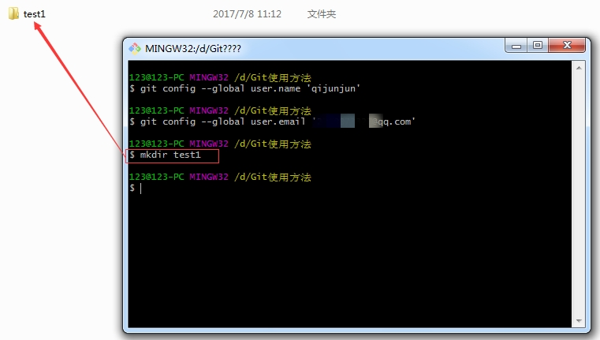
b、在文件内初始化git（创建git仓库）
方法一：直接输入 $ cd test1
方法一：点击test1文件下进去之后-》鼠标右击选择Git Bash Here->输入$ git int
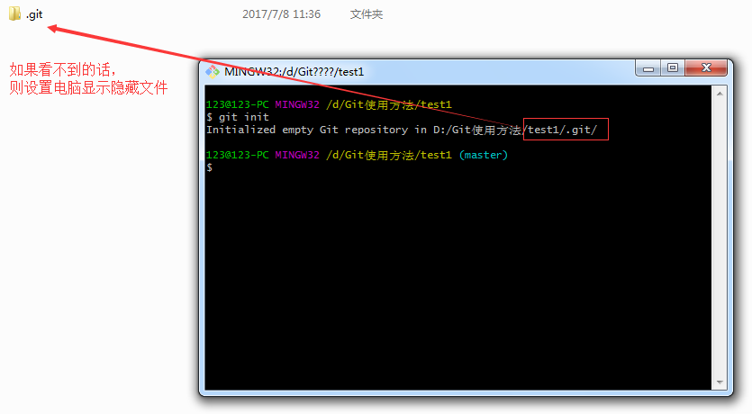
3、向仓库中添加文件
方法一：用打开编辑器新建index.html文件
方法二：使用git命令。$ touch '文件名'，然后把文件通过$ git add '文件名'添加到暂存区，最后提交操作:$ git commit -m '描述信息'
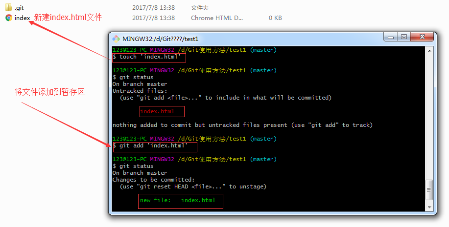
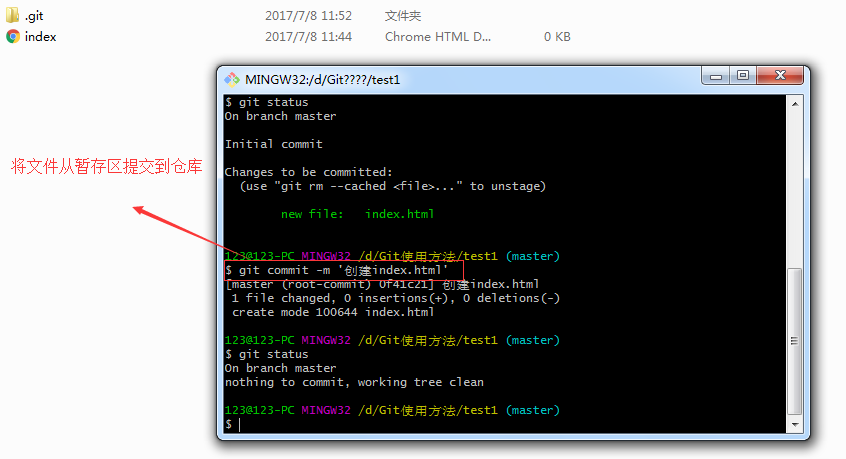
4、修改仓库文件
方法一：用编辑器打开index.html进行修改
方法二：使用git命令。$ vi '文件名'，然后在中间写内容，最后提交操作
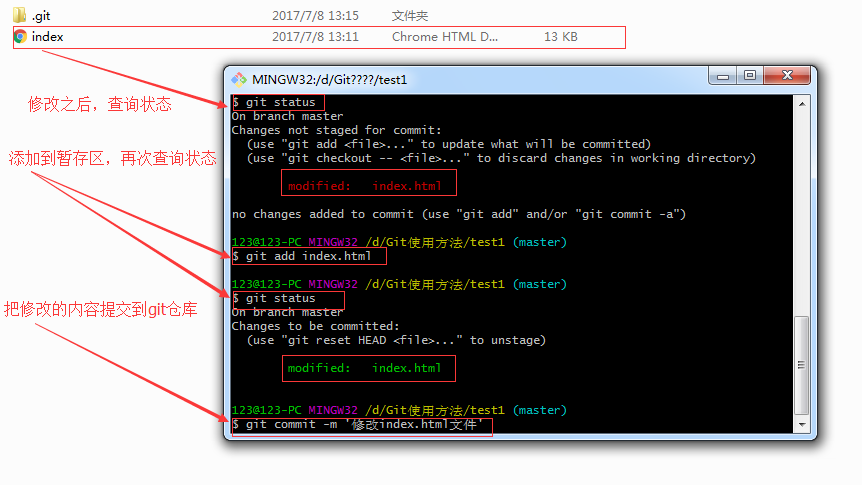
5、删除仓库文件
方法一：在编辑器中直接把要删除的文件删除掉
方法二：使用git删除：$ git rm '文件名'，然后提交操作
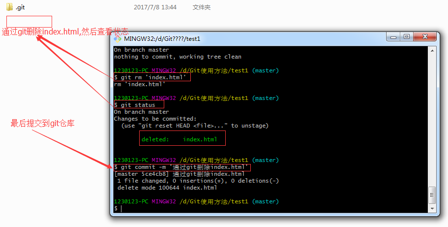
内容转自：https://www.cnblogs.com/yysbolg/p/8566156.html